Nouveautés d’Opquast V5
Présentation - Nouveautés d’Opquast V5
Slide 1 sur 17 - Opquast V4 → V5 : qu’est-ce qui change ?
Slide 1 - Opquast V4 → V5 : qu’est-ce qui change ?
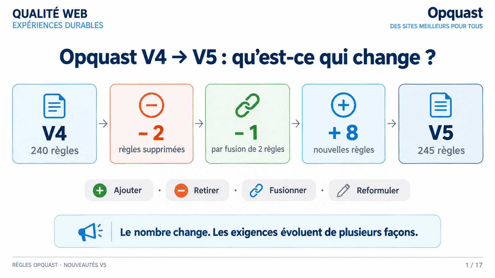
Lecture du visuel
La slide présente le passage d’Opquast V4 à V5. En haut figurent l’en-tête Qualité Web et la signature Opquast. Le centre montre une chaîne de cartes : V4, 240 règles, puis moins deux règles supprimées, moins une règle par fusion, plus huit nouvelles règles, et enfin V5, 245 règles. En dessous, quatre actions sont affichées : Ajouter, Retirer, Fusionner et Reformuler. Un bandeau final rappelle que le nombre change et que les exigences évoluent de plusieurs façons.
Message à retenir
Le nombre change. Les exigences évoluent de plusieurs façons.
Passer de 240 à 245 règles ne signifie pas avoir simplement ajouté cinq exigences. La slide montre les opérations derrière le total : deux règles sortent, deux anciennes exigences sont regroupées en une seule, et huit nouvelles règles entrent dans le référentiel. Relier chaque règle à son impact consiste ici à éviter une mise à jour purement comptable. Ce que garantit cette lecture, c’est une méthode : regarder les ajouts, les retraits, les fusions et les reformulations avant de reporter les numéros dans une grille.
Mémo oral : Le nombre change, pas seulement le compteur.
Slide 2 - Ce qui entre : 8 nouvelles règles
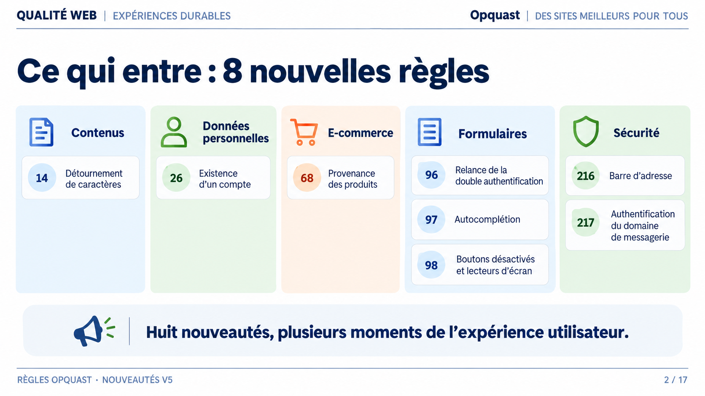
Lecture du visuel
La slide présente la carte des huit nouvelles règles, réparties en cinq familles : contenus, données personnelles, e-commerce, formulaires et sécurité. Chaque famille contient les numéros et intitulés courts des règles concernées. Les formulaires regroupent les règles 96, 97 et 98. La sécurité regroupe les règles 216 et 217. Un bandeau de conclusion indique que ces nouveautés concernent plusieurs moments de l’expérience utilisateur.
Message à retenir
Huit nouveautés, plusieurs moments de l’expérience utilisateur.
Cette carte donne la vue d’ensemble des huit nouveautés. Elles ne forment pas un nouveau silo : elles touchent les contenus, les données personnelles, l’e-commerce, les formulaires et la sécurité. Relier chaque règle à son impact consiste à voir à quel moment de l’expérience utilisateur elle intervient. Ce que garantit cette slide, c’est une orientation : nous savons où se situent les règles avant d’entrer dans chaque situation.
Mémo oral : Huit nouveautés, cinq familles.
Slide 3 - Règle 14 — caractères détournés
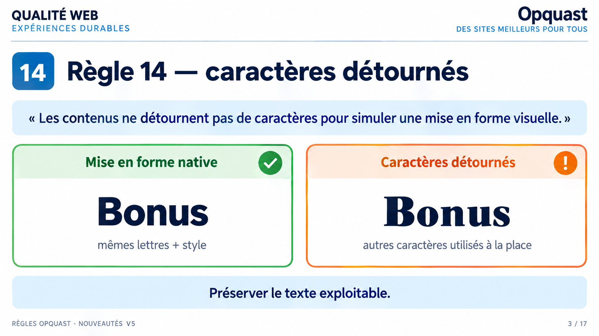
Lecture du visuel
La slide est consacrée à la règle 14. Elle affiche le libellé officiel puis compare deux panneaux : à gauche, une mise en forme native du mot Bonus ; à droite, un exemple de caractères détournés, signalé par une couleur d’attention. La conclusion visible demande de préserver le texte exploitable.
Message à retenir
Préserver le texte exploitable.
La règle 14 part d’un écart entre l’apparence et le texte réellement exploitable. Un faux gras peut ressembler visuellement à une mise en forme, mais il peut remplacer les lettres par d’autres caractères. Relier la règle à son impact, c’est comprendre que le contenu doit rester exploitable par les lecteurs d’écran, les moteurs et les outils. Ce que garantit la règle, c’est l’usage des fonctions natives de mise en forme, plutôt que le détournement de caractères.
Mémo oral : Préserver le texte exploitable.
Slide 4 - Règle 26 — existence d’un compte
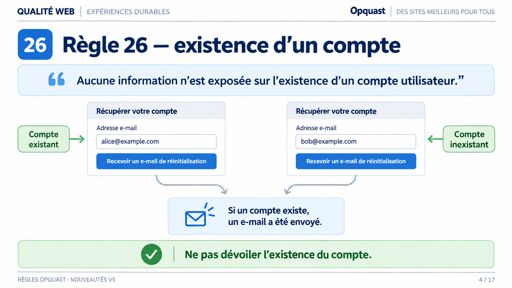
Lecture du visuel
La slide est consacrée à la règle 26. Elle montre deux formulaires fictifs de récupération de compte : l’un annoté comme compte existant, l’autre comme compte inexistant. Dans les deux cas, les flèches convergent vers la même réponse publique : si un compte existe, un e-mail a été envoyé. Le bandeau final rappelle qu’il ne faut pas dévoiler l’existence du compte.
Point de vigilance
Les annotations Compte existant et Compte inexistant sont des repères pédagogiques ajoutés pour la démonstration. Elles ne figurent pas dans l’interface vue par la personne qui utilise le service : celle-ci ne voit que la réponse commune.
Les adresses affichées sont des exemples fictifs.
Message à retenir
Ne pas dévoiler l’existence du compte.
La règle 26 traite une information qui ne devrait pas être déduite depuis l’extérieur : l’existence d’un compte utilisateur. Relier la règle à son impact, c’est comprendre qu’un message trop précis peut permettre à un tiers de savoir qu’une adresse est inscrite. Ce que garantit la règle, c’est une réponse qui ne révèle pas publiquement si le compte existe, notamment lors de la création, de la connexion ou de la récupération de mot de passe.
Mémo oral : Ne pas dévoiler le compte.
Slide 5 - Règle 68 — provenance des produits
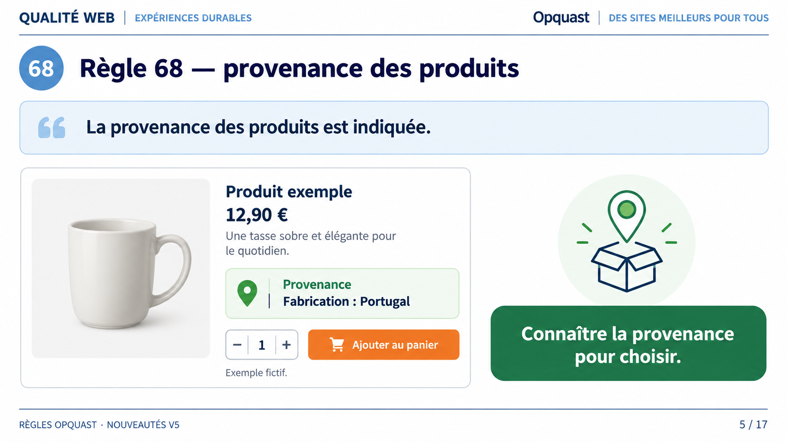
Lecture du visuel
La slide est consacrée à la règle 68. Elle affiche le libellé officiel et une fiche produit fictive avec une tasse, un nom de produit exemple, un prix, une description et une zone Provenance indiquant Fabrication : Portugal. À droite, une illustration de colis et de localisation accompagne le message : connaître la provenance pour choisir.
Point de vigilance
Le produit, son prix et son pays de fabrication sont des exemples fictifs, comme l’indique la mention portée sur le visuel. Ils illustrent l’emplacement de l’information, pas un cas réel.
Message à retenir
Connaître la provenance pour choisir.
La règle 68 ajoute une information importante dans le contexte de l’achat. Relier la règle à son impact, c’est voir que l’acheteur peut vouloir connaître la provenance d’un produit pour décider. Ce que garantit la règle, c’est la présence de cette information, sans transformer la slide en jugement sur le pays, en label écologique ou en promesse de traçabilité complète.
Mémo oral : Connaître pour choisir.
Slide 6 - Règle 96 — relancer la double authentification
Lecture du visuel
La slide est consacrée à la règle 96. Elle affiche le libellé officiel et un parcours en trois étapes : demander le code, constater un code expiré ou non reçu, puis relancer. La scène centrale propose un bouton Renvoyer le code. Le bandeau final précise que l’utilisateur doit pouvoir reprendre sans contourner la sécurité.
Message à retenir
Pouvoir reprendre sans contourner la sécurité.
La règle 96 concerne un cas courant : un code de double authentification peut expirer ou ne pas arriver. Relier la règle à son impact, c’est identifier l’impasse possible dans le parcours de connexion. Ce que garantit la règle, c’est la possibilité de relancer la procédure. Elle ne supprime pas la sécurité ; elle permet de reprendre l’authentification quand la première tentative échoue.
Mémo oral : Reprendre sans contourner.
Slide 7 - Règle 97 — autocomplétion signalée dans le code
Lecture du visuel
La slide est consacrée à la règle 97. Elle affiche le libellé officiel et relie un champ e-mail à un extrait de code contenant autocomplete égal email. Une flèche indique le passage du champ visible vers le signalement dans le code. Le bandeau final rappelle l’objectif : aider la saisie en donnant le bon signal au navigateur.
Extrait de code affiché
<input type="email" name="email" autocomplete="email">Message à retenir
Aider la saisie en donnant le bon signal au navigateur.
La règle 97 ne parle pas seulement de suggestions visuelles dans un formulaire. Elle demande que les champs qui permettent l’autocomplétion soient signalés dans le code source. Relier la règle à son impact, c’est comprendre l’aide apportée à la saisie et aux outils. Ce que garantit la règle, c’est un signal technique lisible par le navigateur, par exemple autocomplete égal email pour un champ e-mail.
Mémo oral : Donner le bon signal au navigateur.
Slide 8 - Règle 98 — boutons désactivés et lecteurs d’écran
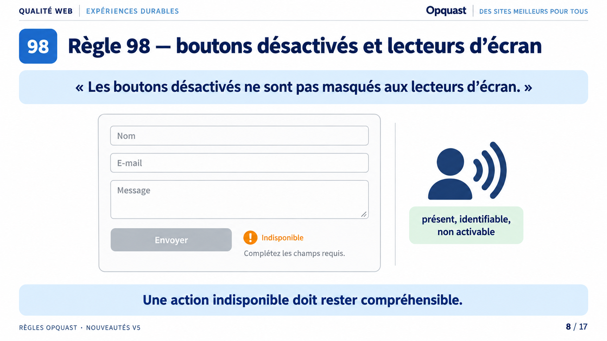
Lecture du visuel
La slide est consacrée à la règle 98. Elle affiche un formulaire avec plusieurs champs et un bouton Envoyer grisé. À côté du bouton, un état Indisponible est accompagné de l’explication Complétez les champs requis. Un pictogramme de restitution illustre que le bouton reste présent, identifiable et non activable. Le bandeau final indique qu’une action indisponible doit rester compréhensible.
Message à retenir
Une action indisponible doit rester compréhensible.
La règle 98 évite qu’une action indisponible devienne incompréhensible. Relier la règle à son impact, c’est voir le problème pour une personne qui utilise un lecteur d’écran : le bouton peut être nécessaire à la compréhension du formulaire même s’il n’est pas encore activable. Ce que garantit la règle, c’est la présence perceptible du bouton, son état et l’explication de son indisponibilité, sans prétendre que cela suffit à rendre tout le formulaire conforme.
Mémo oral : Indisponible mais compréhensible.
Slide 9 - Règle 216 — barre d’adresse visible
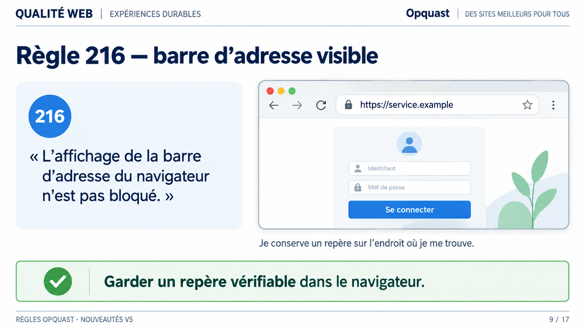
Lecture du visuel
La slide est consacrée à la règle 216. Elle affiche le libellé officiel à côté d’une fenêtre de navigateur. La barre d’adresse visible contient l’adresse https://service.example. Le formulaire de connexion est placé sous cette barre. Une légende indique que l’utilisateur conserve un repère sur l’endroit où il se trouve. Le bandeau final demande de garder un repère vérifiable dans le navigateur.
Point de vigilance
Le domaine service.example est un exemple réservé à la documentation. Il n’identifie aucun service réel.
Message à retenir
Garder un repère vérifiable dans le navigateur.
La règle 216 protège un repère simple : la barre d’adresse. Relier la règle à son impact, c’est comprendre que l’utilisateur doit pouvoir vérifier le domaine où il se trouve, notamment avant de saisir des identifiants. Ce que garantit la règle, c’est que le service ne bloque pas l’affichage de cette barre dans la fenêtre du navigateur. Cela ne prouve pas que le site est honnête ; cela préserve un moyen de vérification.
Mémo oral : Garder la barre d’adresse visible.
Slide 10 - Règle 217 — domaine de messagerie authentifié
Lecture du visuel
La slide est consacrée à la règle 217. Elle montre un domaine d’envoi, service.example, qui passe par trois vérifications techniques : SPF, DKIM et DMARC, avant d’arriver dans une boîte de réception. Un encadré rappelle qu’il s’agit d’authentifier le domaine d’envoi, pas de certifier tout le message. Le bandeau final demande de vérifier le domaine sans promettre une sécurité absolue.
Point de vigilance
SPF, DKIM et DMARC sont les mécanismes cités sur le visuel. Le libellé officiel de la règle n’impose pas une liste technique fermée : il demande que le domaine de messagerie soit authentifié.
Message à retenir
Vérifier le domaine, sans promettre une sécurité absolue.
La règle 217 concerne la messagerie et non l’apparence d’un message. Relier la règle à son impact, c’est comprendre que l’usurpation d’un domaine peut tromper les destinataires et dégrader la délivrabilité. Ce que garantit la règle, c’est l’authentification du domaine d’envoi, notamment avec SPF, DKIM et DMARC. Elle ne certifie pas tout le contenu du courriel et ne promet pas une sécurité absolue.
Mémo oral : Authentifier le domaine, pas tout le message.
Slide 11 - Ce qui sort : deux règles
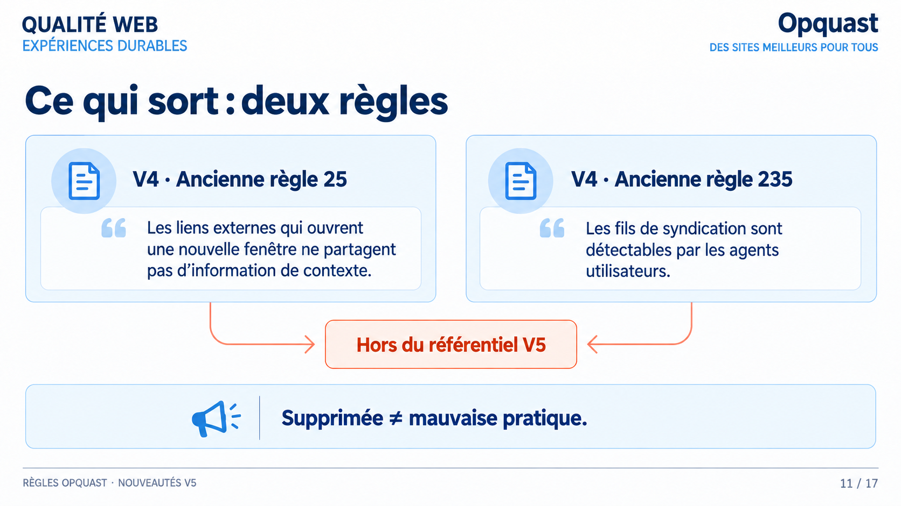
Lecture du visuel
La slide présente les deux règles qui quittent le référentiel. Deux cartes affichent les
anciens libellés de la version 4 : l’une sur les liens externes ouvrant une nouvelle
fenêtre et l’information de contexte, l’autre sur la détectabilité des fils de
syndication. Deux flèches convergent vers un encadré « Hors du référentiel V5 ». Le
bandeau final rappelle qu’une règle supprimée ne devient pas pour autant une mauvaise
pratique.
Libellés officiels
Le visuel cite les libellés complets des deux règles retirées. Contrôlés le 17 septembre
2026 contre l’API Opquast, version assurance-qualite-web :
- règle 25 : « Les liens externes qui ouvrent une nouvelle fenêtre ne partagent pas
d’information de contexte. »
- règle 235 : « Les fils de syndication sont détectables par les agents utilisateurs. »
Aucune règle équivalente ne figure dans la version 5.
Message à retenir
Supprimée ≠ mauvaise pratique.
Deux règles sortent du référentiel. C’est le point le plus facile à mal interpréter : une exigence retirée du socle ne devient pas une erreur, et continuer à l’appliquer ne pénalise personne.
Ce qu’un retrait signifie, c’est que la valeur ajoutée de la règle a diminué au regard du socle : la pratique s’est généralisée, le contexte technique a changé, ou l’exigence est mieux portée ailleurs. Ce que garantit ce mouvement, c’est un référentiel qui reste un socle et non un inventaire cumulatif.
En pratique, une grille d’audit fondée sur la version 4 conserve donc deux contrôles qui n’ont plus d’équivalent en version 5.
Mémo oral : Retirée du socle, pas devenue mauvaise.
Slide 12 - Ce qui fusionne : 2 règles vers 1
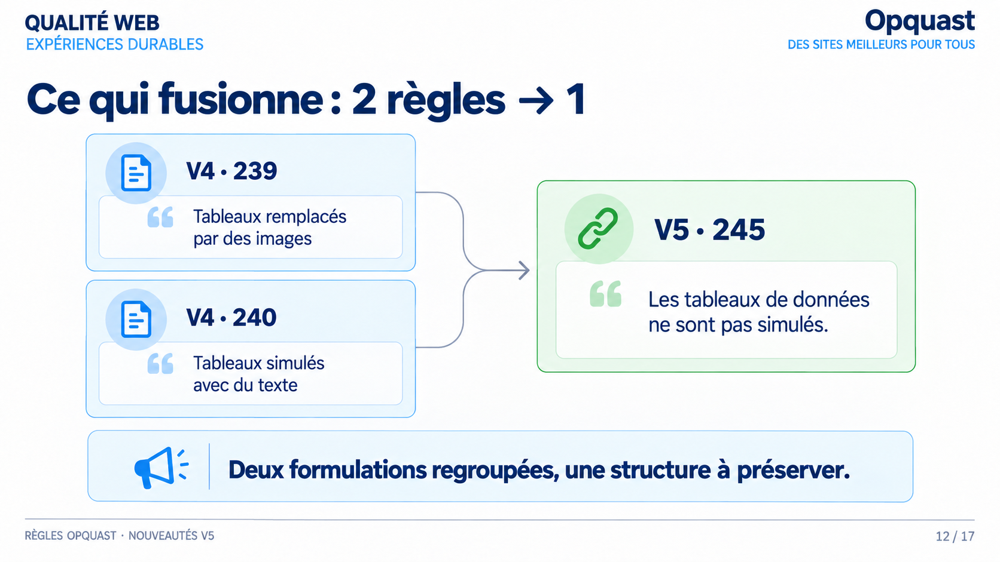
Lecture du visuel
La slide montre une fusion. Deux cartes de la version 4, l’une sur les tableaux remplacés
par des images, l’autre sur les tableaux simulés avec du texte, convergent vers une carte
unique de la version 5, la règle 245 : « Les tableaux de données ne sont pas simulés. »
Le bandeau final résume le mouvement : deux formulations regroupées, une structure à
préserver.
Libellés officiels
Le visuel résume les deux règles fusionnées. Leurs libellés complets en version 4,
contrôlés le 17 septembre 2026 contre l’API Opquast, version assurance-qualite-web :
- règle 239 : « Les tableaux de données ne sont pas remplacés par des images. »
- règle 240 : « Les tableaux de données ne sont pas simulés à l’aide de texte mis en
forme. »
La règle 245 de la version 5 couvre les deux cas sous un libellé unique.
Message à retenir
Deux formulations regroupées, une structure à préserver.
Deux anciennes exigences décrivaient le même problème par deux chemins : un tableau aplati en image, un tableau imité avec des espaces ou des tirets. Dans les deux cas, la structure du tableau disparaît du code.
Relier la règle à son impact, c’est voir ce que perd la personne qui n’accède pas au rendu visuel : sans balisage, les relations entre lignes et colonnes ne sont plus restituées, et le contenu n’est ni exploitable ni réutilisable.
Ce que garantit la règle 245, c’est un critère unique qui couvre les deux cas : un tableau de données doit être un vrai tableau. Pour un audit, cela veut dire un contrôle de moins à tenir, mais le même niveau d’exigence.
Mémo oral : Une seule règle, la structure reste due.
Slide 13 - Ce qui se reformule : l’exemple de la 112
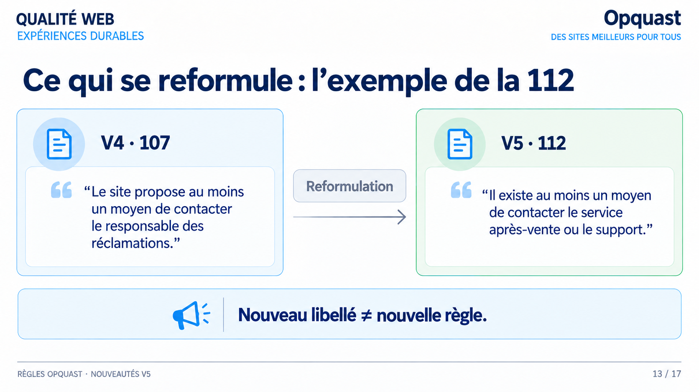
Lecture du visuel
La slide illustre une reformulation. À gauche, le libellé de la version 4 parle du site
qui propose un moyen de contacter le responsable des réclamations. À droite, le libellé
de la version 5, la règle 112, parle d’un moyen de contacter le service après-vente ou le
support. Une flèche marquée « Reformulation » relie les deux. Le bandeau final rappelle
qu’un nouveau libellé ne fait pas une nouvelle règle.
Contrôle des libellés
Les deux libellés affichés sont conformes aux libellés officiels, contrôlés le
17 septembre 2026 contre l’API Opquast : règle 107 en version assurance-qualite-web,
règle 112 en version qualite-numerique.
Message à retenir
Nouveau libellé ≠ nouvelle règle.
Ici, rien n’entre ni ne sort : c’est la même exigence, exprimée autrement. Le premier libellé était centré sur « le site » et sur le vocabulaire de la réclamation ; le second parle d’un service et du support.
Relier la reformulation à son impact, c’est comprendre pourquoi elle a lieu : le référentiel s’applique à des services qui ne sont pas tous des sites web, et l’utilisateur cherche de l’aide avant de chercher un responsable des réclamations.
Ce que garantit la règle, c’est la même chose qu’avant : il doit exister au moins un moyen d’atteindre le support. En revanche, le contrôle change de formulation, et c’est ce libellé-là qu’il faut reprendre dans une grille d’audit.
Mémo oral : Même exigence, autre formulation.
Slide 14 - Attention aux numéros
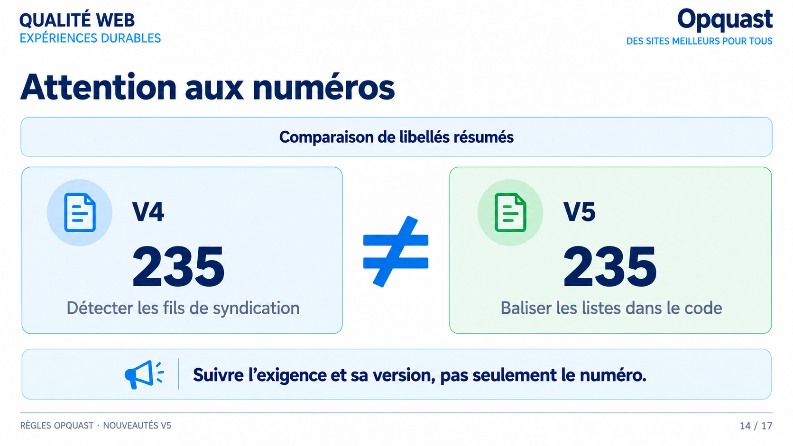
Lecture du visuel
La slide met en garde contre l’usage du seul numéro de règle. Elle place côte à côte deux
cartes portant le même numéro, 235, séparées par un signe « différent de » : d’un côté un
résumé sur la détection des fils de syndication, de l’autre un résumé sur le balisage des
listes dans le code. Le visuel précise lui-même qu’il compare des libellés résumés, et non
les libellés officiels complets. Le bandeau final demande de suivre l’exigence et sa
version, pas seulement le numéro.
Libellés officiels
Le visuel compare des libellés résumés. Les libellés officiels, contrôlés le 17 septembre
2026 contre l’API Opquast, sont les suivants :
- version 4, règle 235 : « Les fils de syndication sont détectables par les agents
utilisateurs. »
- version 5, règle 235 : « Les éléments visuellement présentés sous forme de liste sont
balisés de façon appropriée dans le code source. »
En version 4, le balisage des listes portait le numéro 228. C’est donc bien un même
numéro qui désigne deux exigences sans rapport selon la version du référentiel.
Message à retenir
Suivre l’exigence et sa version, pas seulement le numéro.
C’est le piège le plus concret de la migration. Quand des règles sortent et que d’autres entrent, la numérotation se réorganise : un numéro peut se retrouver associé à une exigence sans rapport avec celle qu’il désignait avant.
Relier ce point à son impact, c’est penser à tout ce qui cite un numéro sans son libellé : une grille d’audit, un ticket, une consigne d’équipe, un rapport livré à un client. Rien n’y signale que le sens a changé.
Ce que garantit une bonne pratique de migration, c’est de toujours transporter le libellé et la version avec le numéro. Un numéro seul n’est pas une exigence.
Mémo oral : Un numéro sans version ne veut rien dire.
Slide 15 - Derrière V5 : du Web au numérique
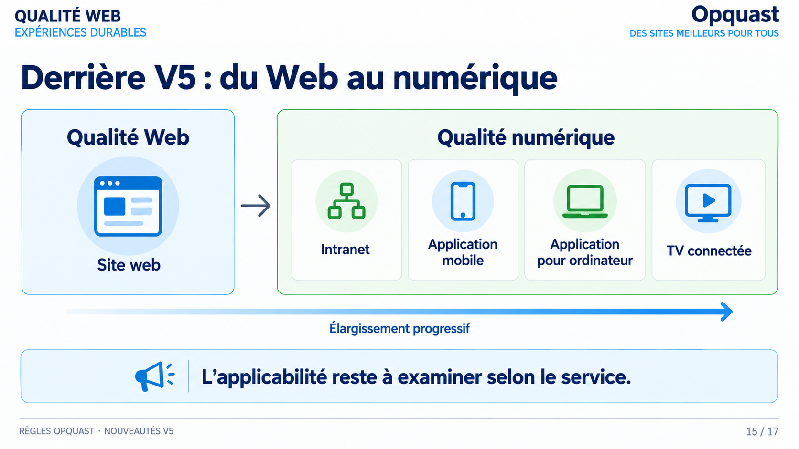
Lecture du visuel
La slide situe le mouvement de fond de la version 5. À gauche, la qualité web est
représentée par un site web. À droite, la qualité numérique réunit quatre contextes :
intranet, application mobile, application pour ordinateur et télévision connectée. Une
flèche légendée « Élargissement progressif » traverse la slide. Le bandeau final précise
que l’applicabilité reste à examiner selon le service.
Point de vigilance
Les quatre contextes figurés sont des exemples d’élargissement, pas une liste officielle
et fermée des périmètres couverts par le référentiel.
Message à retenir
L’applicabilité reste à examiner selon le service.
Cette slide explique pourquoi les libellés bougent autant. Le référentiel ne parle plus seulement de sites web : il vise des services numériques, dont certains n’ont ni page ni navigateur.
C’est ce qui explique les reformulations vues juste avant. Quand un libellé dit « le site », il ne peut pas s’appliquer à une application mobile ou à un intranet ; quand il dit « le service », il le peut.
Ce que cet élargissement ne fait pas, c’est rendre toutes les règles applicables partout. L’applicabilité s’examine service par service, et une règle non applicable reste non applicable : c’est un constat d’audit, pas un échec.
Mémo oral : Le périmètre s’élargit, l’applicabilité s’examine.
Slide 16 - Tags et applicabilité
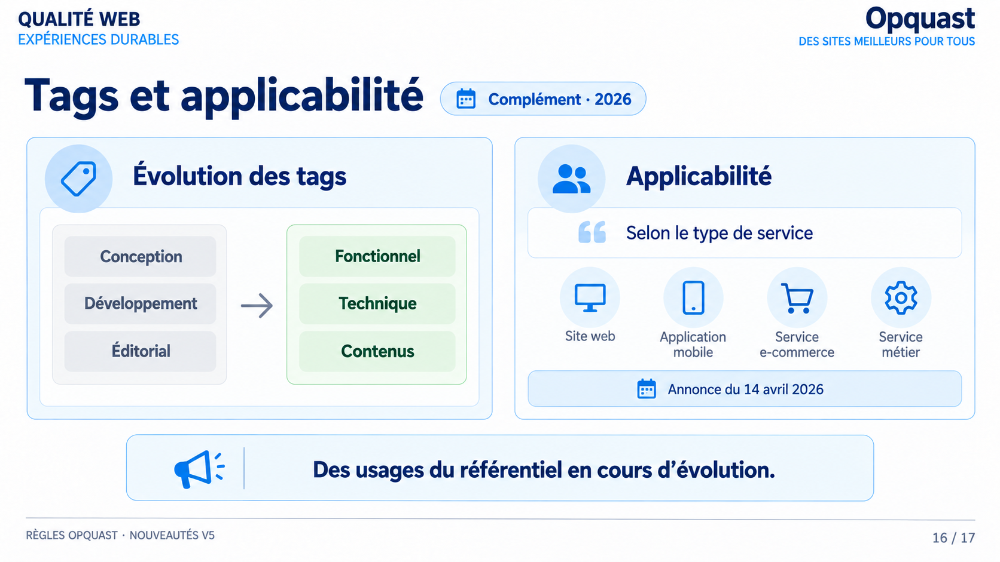
Lecture du visuel
La slide réunit deux compléments annoncés pour 2026. À gauche, l’évolution des tags : les
étiquettes Conception, Développement et Éditorial laissent place à Fonctionnel, Technique
et Contenus. À droite, l’applicabilité, présentée selon le type de service, avec quatre
exemples : site web, application mobile, service e-commerce et service métier. Le visuel
mentionne une annonce du 14 avril 2026. Le bandeau final indique que les usages du
référentiel sont en cours d’évolution.
Point de vigilance
Le badge « Complément · 2026 » et la date du 14 avril 2026 sont repris du visuel. Ils
annoncent des évolutions d’usage et ne modifient pas les 245 règles présentées dans cette
série.
Message à retenir
Des usages du référentiel en cours d’évolution.
Cette slide ne parle plus du contenu des règles mais de la façon de s’en servir.
Le changement de tags est plus qu’un renommage. Classer par Conception, Développement et
Éditorial, c’est ranger les règles par métier, donc par organisation. Classer par
Fonctionnel, Technique et Contenus, c’est ranger par nature de l’exigence, ce qui reste
valable quelle que soit l’équipe qui la traite.
L’applicabilité par type de service répond à la question laissée ouverte par la slide
précédente : toutes les règles ne concernent pas tous les services, et cette information
a vocation à être portée par le référentiel lui-même plutôt que reconstruite par chaque
équipe.
Mémo oral : Classer par nature d’exigence, pas par métier.
Slide 17 - Conclusion : comment évolue un référentiel ?
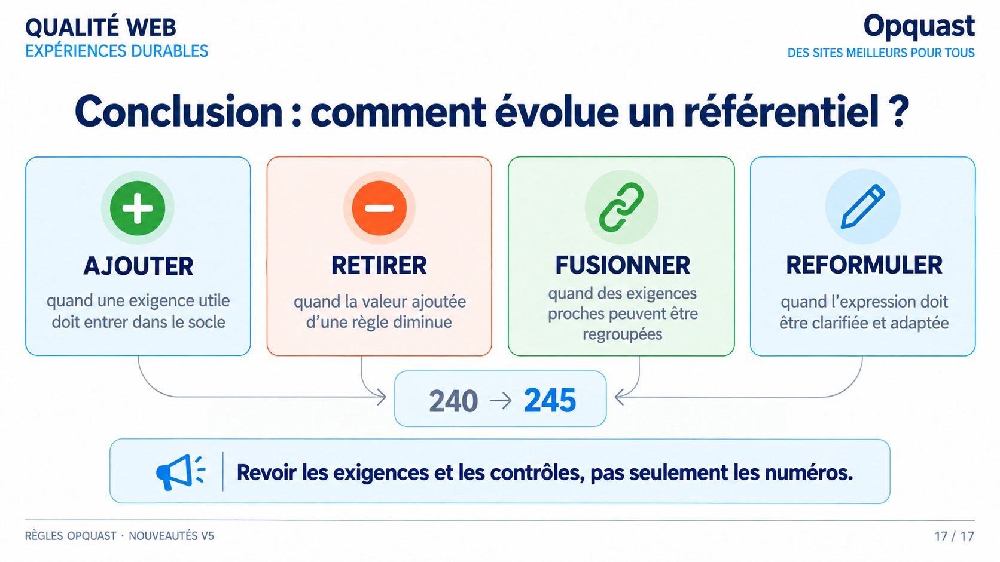
Lecture du visuel
La slide de conclusion reprend les quatre opérations d’évolution du référentiel, chacune
avec son critère : ajouter quand une exigence utile doit entrer dans le socle, retirer
quand la valeur ajoutée d’une règle diminue, fusionner quand des exigences proches peuvent
être regroupées, reformuler quand l’expression doit être clarifiée et adaptée. Les quatre
cartes convergent vers l’encadré « 240 → 245 », qui ferme la boucle ouverte par la
première slide. Le bandeau final demande de revoir les exigences et les contrôles, pas
seulement les numéros.
Message à retenir
Revoir les exigences et les contrôles, pas seulement les numéros.
Nous revenons au point de départ. L’écart entre 240 et 245 tient en quatre opérations, et chacune répond à un critère différent.
Ce que garantit cette lecture, c’est une méthode de reprise plutôt qu’un report de numéros : repérer les huit règles qui entrent, les deux qui sortent, la fusion et les reformulations, puis mettre à jour les contrôles correspondants.
Concrètement, une grille d’audit héritée de la version 4 ne se met pas à jour en changeant le total affiché. Elle se met à jour exigence par exigence, en transportant chaque libellé avec sa version.
Mémo oral : Revoir les exigences, pas le compteur.